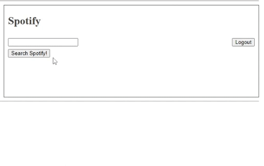

I'm currently a Tier 2 Support Engineer with Wellsky but I like to develop programs and write music on the side. I'm currently located in Highland Park, NJ.
AlbumRater: my personal musical rating algorithm, with support for Spotify as well as manual input.

LyricUniqueWordCounter: an implementation of pudding.cool's research on rapper vocabularies in Python. Provides an artist's number of unique words in their first 35000 words (a few albums' worth).
Startpage: browser homepage with weather information and a variant on Do I Need A Jacket functionality. A writeup on this can be found here.